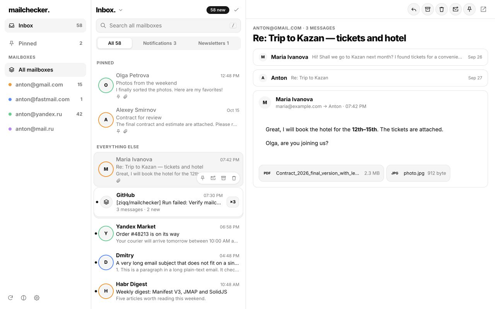

One inbox
Connected accounts, folders, unread counts, pinned mail and new-mail notifications in one client.
Mail in your browser
Read and manage connected mailboxes from the browser toolbar, or open a full tab when you need more room.
Connect Gmail, Yandex Mail and Mail.ru through an existing browser sign-in, or connect a JMAP mailbox with its API token. Gmail also supports a separate Google API connection for each account.
The first Chrome Web Store release and public Google OAuth verification are in preparation. Google may show an unverified-app warning and limit Google API access until verification is complete. Outlook / Microsoft 365 is not available in this build.
View the project
Connected accounts, folders, unread counts, pinned mail and new-mail notifications in one client.
Open conversations, change read state, archive mail or move selected messages to Trash.
Search server history with supported connections. Gmail history search requires the Google API connection; browser-sign-in Gmail does not support integrated history search.
Your data
mailchecker has no backend, advertising, analytics or telemetry. Requests go directly from your browser to the provider you connect. Preferences, credentials and loaded mail stay in your browser profile. The local cache opens mail you have already loaded; it does not download your entire history or encrypt your browser profile.
Google access lets you read and search Gmail, browse folders, change message state, move mail to Trash and send replies. Each Gmail account is authorized separately. Available actions depend on the provider; unsupported replies open webmail.
Message HTML is sanitized and displayed in an isolated reader. Remote images remain blocked until you choose to show them. You can clear the mail cache or disconnect an account in Settings.
Read the privacy policy →